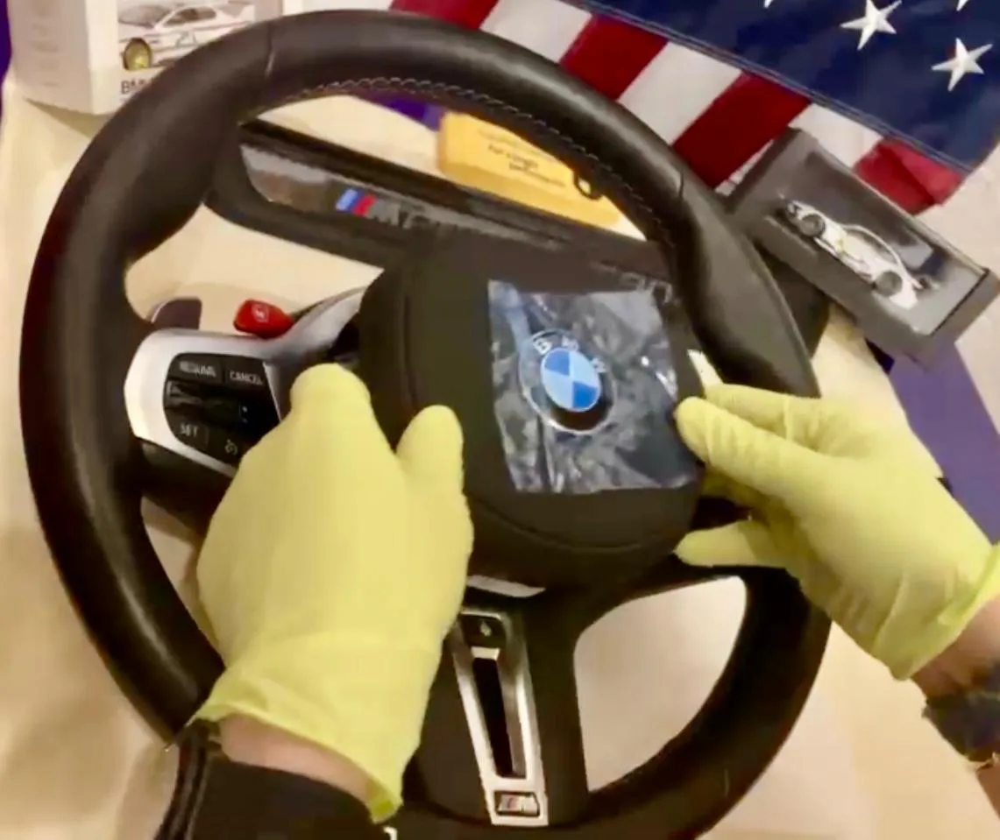

Volante M
Alcántara LCI

Toca la foto principal para verla grande.
El volante M Competition de M3 y M4 (G80/G82), de piel, con botones M1 y M2. Le queda a F y a G: lo que se vende es la estética.
$21,500 MXNPrecio de referencia — por confirmar
El volante M Competition de M3/M4 (G80/G82) le queda a las dos generaciones. Cuéntanos tu modelo y año y evaluamos la aplicación.
La pieza
- MaterialAlcántara, carbono
- Versión de pielM Competition de M3/M4 (G80/G82), en las fotos de esta ficha
- AcabadoMarca central roja, botones M1 / M2
- OrigenOEM genuino
- Número de parte32307908499 · 32302462910
- RetrofitF y G — el volante M Competition de M3/M4 (G80/G82); adaptación G a F con adaptador, por estudiar caso por caso
La instalación
- Qué incluyePor confirmar
- Qué se verifica al finalPor confirmar
- Botones M1 / M2En carros que no son M, los botones M1 y M2 son parte del diseño: no activan modos M.
- CompatibilidadF y G, por estudiar caso por caso
- DisponibilidadPor confirmar
El volante, en video
Diez segundos en la cabina.
Video real pendiente — lo grabamos nosotros. Cuando el archivo esté en assets/video-volante.mp4, este reproductor lo muestra sin tocar la página. Cómo se graba
Teléfono en horizontal, 10 segundos, cabina de noche: el volante M girando suave o el cuadro encendiéndose. Sin caras, sin placas visibles, en silencio y con buena luz de cabina. Las instrucciones completas están en video-volante-instrucciones.md.